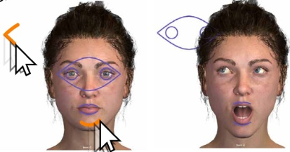
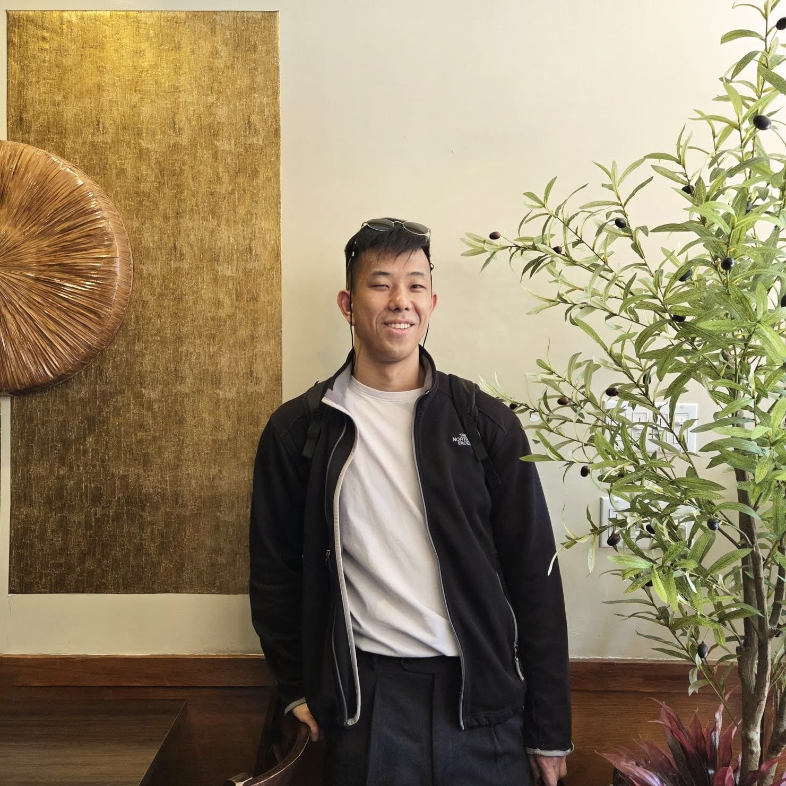
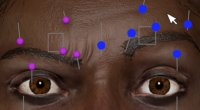
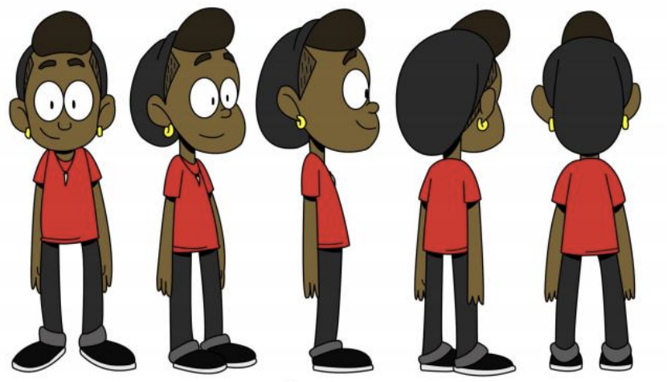

2025
Squidgets: Sketch-based Widget Design for Scene Manipulation
Honorable Mention Award, top 5%
Sketch-based widgets for authoring scene manipulation behavior directly in context.
Project page
I am completing my PhD in computer science at the University of Toronto, advised by Professor Karan Singh in the Dynamic Graphics Project lab. My research focuses on in-situ interaction and direct manipulation for creation, design exploration, and interactive graphics applications.
I have served as a course instructor at the University of Toronto, where I enjoy teaching and working with students. I care about story-driven lectures and dynamic visualizations that make complex ideas easier to see.
Outside of research and teaching, I enjoy serving my church, buying specialty coffee, and Olympic Weightlifting (snatch: 90kg, clean & jerk: 111kg).

Honorable Mention Award, top 5%
Sketch-based widgets for authoring scene manipulation behavior directly in context.
Project page
Interface layout optimization for faster, clearer control of deformable facial animation rigs.
Project page
A computational imaging project exploring how cartoon priors can influence neural radiance field reconstruction.
PDF
Fall 2025
Fall 2024
Summer 2024
Winter 2024
Fall 2023
Summer 2018
2019 - 2026
2017 - 2018
2012 - 2016